Teil 2 · Didaktik 2.2 · Generation 534411b8fa941f9a

Im Tokenhafen zerlegt Berta den Text in Stücke aus einem endlichen Vokabular. Zu jedem Stück gehört eine ID. Der Bürgermeister zählt die Plätze auf dem Tisch: Frage, bisheriges Gespräch und Antwort teilen sich ein Kontextbudget. Ein seltenes Wort kann mehrere Stücke brauchen. Wenn der Tisch überläuft, fällt früherer Text heraus. Die Stadt kann den verlorenen Inhalt anschließend flüssig ergänzen, obwohl sie ihn nicht mehr auf dem Tisch hat.
Führe die vorgegebenen BPE-Merges in ihrer Rangfolge aus. Zähle Prompt, Sondertokens und Antwortreserve getrennt und untersuche die Trunkierung.
Die Zerlegung folgt dem Vokabular und den Merge-Regeln. Die Summe aller belegten und reservierten Plätze muss zum gewählten Budget passen. Abschneiden ist eine Entscheidung der Anwendung. Das Modell meldet fehlenden Kontext nicht zuverlässig von selbst.
Zähle Tokenplätze statt vermeintlicher Wörter. Prüfe vor einer Antwort, ob der benötigte Name noch im Kontext steht. Ein Fragezeichen ist kein automatisches Warnsignal der Stadt.